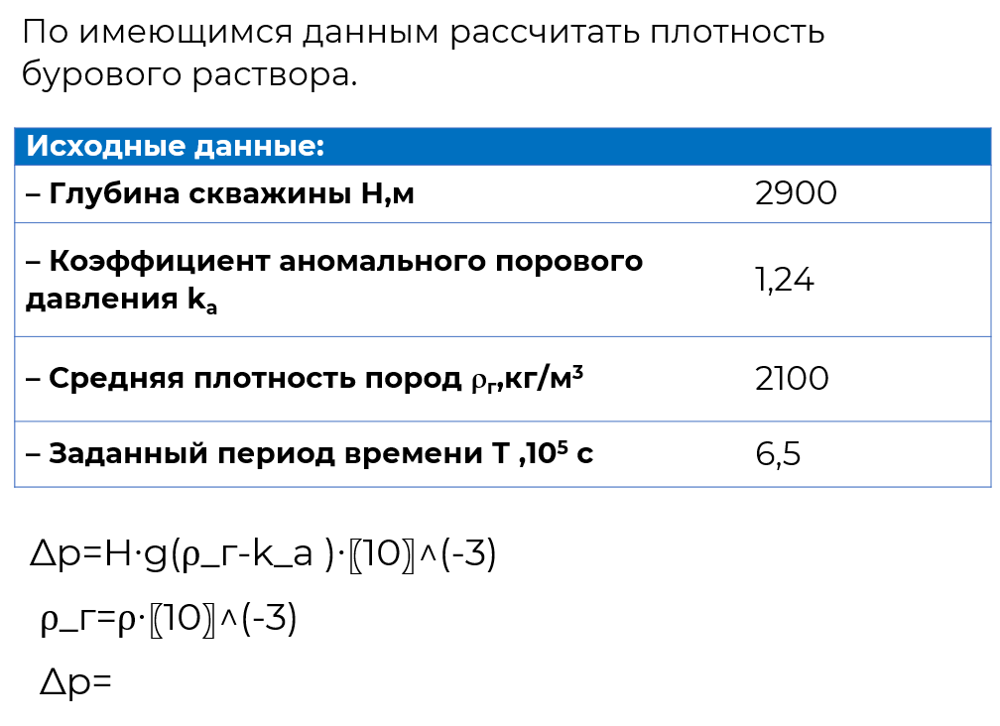

Зарезка новых стволов
На главную
Назад
3/10

1. Изучите основные правила техники безопасности в бурении.
2. Изучите область применения и основные узлы мобильной буровой установки.
3. Установите соответствие между цифровым обозначением и основными узлами мобильной буровой установки.
4. Изучите буровое оборудование, предназначенное для спуско-подъемных операций.
5. Установите соответствие между названиями основных узлов плашечного превентора и их цифровым обозначением.
6. Изучите область применения буровых растворов.
7. Изучите основные параметры буровых растворов.
8. Определите плотность бурового раствора и приведенного давления.